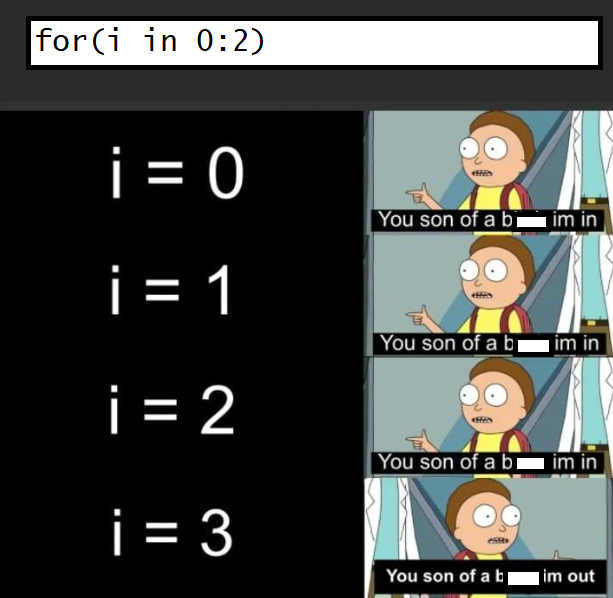
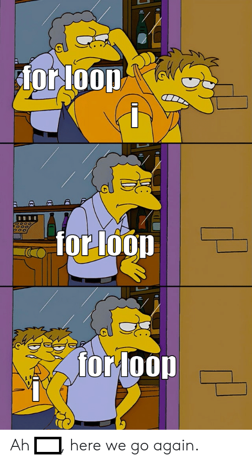
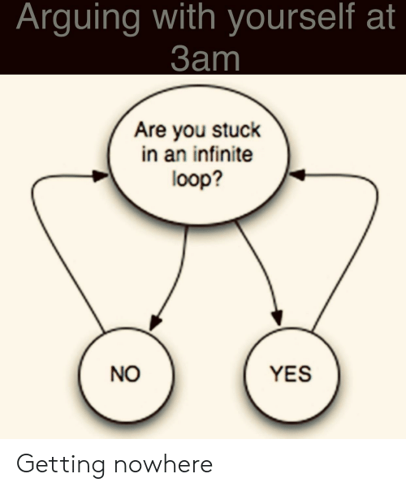
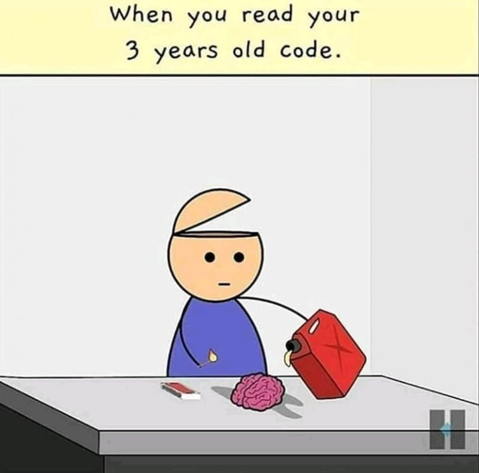
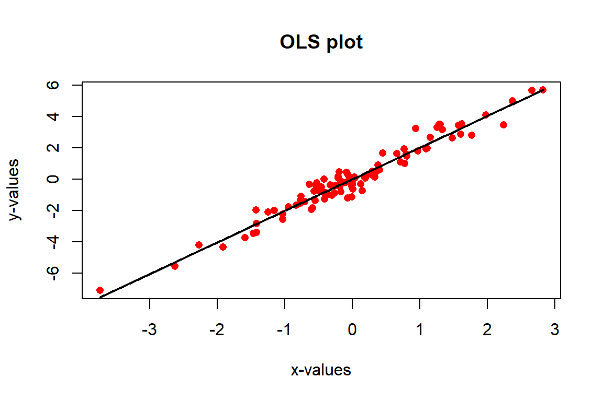
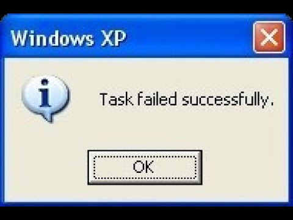

8 Writing functions in R
8.1 Conditionals and control flow
In this chapter you’ll learn about relational operators to compare R objects and logical operators to combine logical expressions. Next, you’ll use this knowledge to build conditional statements. [Quote from DataCamp’s `Intermediate R’ course]
Make sure not to mix up == and =, where the latter is used for assignment and the former checks equality (see Section 3.2).
[1] TRUE[1] TRUE[1] TRUE[1] TRUENow you’ll focus on inequalities.
[1] FALSE[1] FALSE[1] FALSEFor string comparison, R determines the greater than relationship based on alphabetical order. Also, keep in mind that TRUE corresponds to 1 in R, and FALSE coerces to 0 behind the scenes.
R’s relational operators also work on vectors.
[1] TRUE TRUE FALSE FALSE TRUE[1] FALSE FALSE FALSE TRUE TRUE8.2 Logical operators
We already discussed the logical operators in Chapter 3, so you already know the basics. Can you predict what the outcome will be of the following statements?
The logical operators applied to vectors
[1] FALSE FALSE FALSE FALSE TRUE8.3 Conditional statements
We encounter conditional statements on a daily basis. Just think of the following behavior that perfectly illustrates this.
Hahahaha =D*Cough* awkward silence...With this, we illustrated the basic concept of a conditional statement and with it, a conditional execution. We basically read this code as if this statement is TRUE then we do this. If it is FALSE, we do another thing. With the above example, it is quite obvious. If the joke is funny, we laugh. If not, an awkward silence follows.

We can also just use the if without specifying else (make sure your volume is not at max when running this code and wearing a headphone).
We can also use the function ifelse, which is a vectorized version of the if/else construct (Douglas et al. 2020).
FunnyJoke <- c(TRUE, FALSE)
CondTRUE <- "Hahaha =D"
CondFALSE <- "*Cough* awkward silence..."
ifelse(FunnyJoke, CondTRUE, CondFALSE)[1] "Hahaha =D" "*Cough* awkward silence..."When using the ifelse() function, you have to make sure that you know what it does. ifelse(test, yes, no) returns a vector of the same length as test, with elements yes[i] when test[i] is TRUE and no[i] when test[i] is FALSE. This might sound confusing, so let’s just illustrate it with an example.
[1] "< 0" ">= 0" ">= 0"We can also use multiple nested if … else statements.
ShellExec <- function(x) {
# replacement for shell.exe (doesn't exist on MAC)
if (exists("shell.exec",where = "package:base"))
return(base::shell.exec(x))
comm <- paste("open",x)
return(system(comm))
}
Samples <- 1:3
SampleVideo <- sample(Samples, 1, FALSE)
OpenVid <-
if(SampleVideo == 1) {
"https://www.youtube.com/watch?v=dQw4w9WgXcQ"
} else if(SampleVideo == 2) {
"https://www.youtube.com/watch?v=CsGYh8AacgY&t=12s"
} else {
"https://www.youtube.com/watch?v=1g9sneS2MF4"
}
ShellExec(OpenVid)
SampleVideo <- sample(Samples[!1:3 %in% SampleVideo], 1, FALSE)8.4 Loops
When we have to perform a repetitive task, loops are the way to go. This repetitive task is then executed within each loop for a specified number of times or until a specific condition is met. Within R, there are three main types of loops, the for loop, the while loop and the repeat loop @cite(introRbookdown).
8.4.1 The for loop
The for loop is the most well known loop and also one of the most common loops within programming languages. The following example illustrates how for loops work.
[1] 1
[1] 2
[1] 3
[1] 4
[1] 5In this example, we loop over the vector 1:5 and i is used as an index or counter. The inner part of the for loop is then repeated for every iteration. Breaking it down to the basics, we tell R to repeat the inner part (i.e. the code within the curly braces {}) 5 times (length(1:5)), taking subsequent values of the vector 1:5 in every loop and to keep track of the iteration with i.
Hence, for the first iteration, i gets the first value of the vector 1:5 which is 1 and runs the code print(i). In the second iteration, it gets the value 2 and so on.

The counter is not limited to i, but basically every valid name can be used. Can you guess what the following output will be?
[1] 2
[1] 3
[1] 5
[1] 7
[1] 11
[1] 13When working with loops, we have to be careful to not get stuck in an infinite loop. Even though this is more common in while loops, this can also happen in for loops.

For example, when we adjust the counter i in the inner part, we get stuck in an infinite loop. One way to get out of this loop, is by using the break statement.
[1] 1
[1] 1
[1] 1Consequently, when using a for loop, make sure that you don’t adjust the counter variable i that keeps track of the iterations! To make sure that everything goes as expected in the inner part of your for loop, you can always run a test by first creating i <- 1 (or whatever value of the vector you are looping over) for example and then run the inner part.
To save the results of each iteration, we can basically use any data structure. A list is most often used, as its structure is quite intuitive to save the results of our loop. To save our results in this way, we create an empty list. Let’s work with the data base birthwt from the package MASS
Attaching package: 'MASS'The following object is masked from 'package:dplyr':
selectbwt <- with(birthwt, {
race <- factor(race, labels = c("white", "black", "other"))
ptd <- factor(ptl > 0)
ftv <- factor(ftv)
levels(ftv)[-(1:2)] <- "2+"
data.frame(low = factor(low), age, lwt, race, smoke = (smoke > 0),
ptd, ht = (ht > 0), ui = (ui > 0), ftv)
})Cols <- colnames(bwt)
DescrVars <- list()
for(Var in Cols) {
x <- bwt[, Var]
DescrVars[[Var]] <-
if(is.numeric(x)) {
mean(x)
} else {
table(x)
}
}
DescrVars$low
x
0 1
130 59
$age
[1] 23.238
$lwt
[1] 129.81
$race
x
white black other
96 26 67
$smoke
x
FALSE TRUE
115 74
$ptd
x
FALSE TRUE
159 30
$ht
x
FALSE TRUE
177 12
$ui
x
FALSE TRUE
161 28
$ftv
x
0 1 2+
100 47 42 When using loops, it is also important to try to be as efficiently as possible by avoiding repetition within the loop. Try to avoid recomputing the same thing within the same loop. This is why we use x <- bwt[, Var] in the above example and not
DescrVars <- list()
for(Var in Cols) {
DescrVars[[Var]] <-
if(is.numeric(bwt[, Var])) {
mean(bwt[, Var])
} else {
table(bwt[, Var])
}
}By avoiding repetition, the code will run faster and this will be more important when working with large inner functions or large data sets. In addition, the chance of a coding error is also smaller in this case.
8.4.1.1 Nested for loops
We can also use a for loop within another for loop and that’s what we called nested for loops. For example,
Alph = matrix(letters[1:4], nrow = 2)
for(j in 1:ncol(Alph)) {
for(i in 1:nrow(Alph)) {
cat(paste0("\nAlph[",i, ", ", j , "] = ", Alph[i, j], "\n"))
}
}
Alph[1, 1] = a
Alph[2, 1] = b
Alph[1, 2] = c
Alph[2, 2] = dTo save the results of nested loops, lists are the perfect type of object. In order to be able to save the results in an empty list (which does not have the nested structure yet), we have to use names when saving these in the slots of the list.
Results <- list()
for(j in seq_len(ncol(Alph))) {
for(i in seq_len(nrow(Alph))) {
Results[[paste0("Column", j)]][[paste0("Row", i)]] <- paste0("Alph[",i, ", ", j , "] = ", Alph[i, j])
}
}
Results$Column1
$Column1$Row1
[1] "Alph[1, 1] = a"
$Column1$Row2
[1] "Alph[2, 1] = b"
$Column2
$Column2$Row1
[1] "Alph[1, 2] = c"
$Column2$Row2
[1] "Alph[2, 2] = d"Alternatively, we can already specify the dimensions of the nested list using the following code.
Results <- list(vector("list", 2), vector("list", 2)) # Create an empty nested list
for(j in seq_len(ncol(Alph))) {
for(i in seq_len(nrow(Alph))) {
Results[[j]][[i]] <- paste0("Alph[",i, ", ", j , "] = ", Alph[i, j])
}
}
Results[[1]]
[[1]][[1]]
[1] "Alph[1, 1] = a"
[[1]][[2]]
[1] "Alph[2, 1] = b"
[[2]]
[[2]][[1]]
[1] "Alph[1, 2] = c"
[[2]][[2]]
[1] "Alph[2, 2] = d"8.4.2 The while loop
With a while loop, you repeat the inner part until some logical condition is met.
Take, for example, that we have 64 tasks on our to-do list and we want to get at least 5 tasks done for today.
10 tasks left
9 tasks left
8 tasks left
7 tasks left
6 tasks left[1] 5Another example is the following.
[1] FALSEAs with for loops, we can also use the break statement to stop the loop.
[1] 8The example below puts many things together (taken from DataCamp’s `Intermediate R’ course).
[1] 3
[1] 6
[1] 9
[1] 12
[1] 15
[1] 18
[1] 21
[1] 24The repeat loop is similar to the while loop, but has no conditional check (Douglas et al. 2020). So in this case, you have to make sure that you don’t get stuck in an infinite loop by building in a break statement.
i <- 0
repeat {
print("Eat")
print("Sleep")
print("Rave")
print("Repeat")
i <- i + 1
if(i >= 3)
break
}[1] "Eat"
[1] "Sleep"
[1] "Rave"
[1] "Repeat"
[1] "Eat"
[1] "Sleep"
[1] "Rave"
[1] "Repeat"
[1] "Eat"
[1] "Sleep"
[1] "Rave"
[1] "Repeat"8.5 Functions in R
The book ‘An Introduction to R’ (Douglas et al. 2020) gives a splendid (and funny) description of functions:
Functions are your loyal servants, waiting patiently to do your bidding to the best of their ability. They’re made with the utmost care and attention … though sometimes may end up being something of a Frankenstein’s monster - with an extra limb or two and a head put on backwards. But no matter how ugly they may be, they’re completely faithful to you.
They’re also very stupid.
8.5.1 Using a function
Throughout this book, we have already been using functions, but what exactly is a function? Let’s start from a classic one, the mean() function.
function (x, ...)
NULLBasically, we give input to this function and it will return the arithmetic mean. In mean(x, trim = 0, na.rm = FALSE, ...) x is required; if you do not specify it, R will throw an error. This is a good thing, because you of course need to tell R of what object you want to compute the mean. Here, x is an argument of the function mean() and with mean(x = a), you tell R to compute the mean of the object a. trim and na.rm are optional arguments: they have a default value which is used if the arguments are not explicitly specified. [Quote from DataCamp’s ‘Intermediate R’ course.]
You will now use the mean function as follows
[1] NA[1] 6.25Functions return objects that can be used elsewhere. As such, you can use a function within function.
[1] 2 6 4 NA NA[1] 48.5.2 Write your own function
The ability to use self-written functions makes R incredibly powerful, efficient, convenient and elegant. Once you learn how to write your own functions, programming with R will be even more comfortable and productive (Venables, Smith, and R Core Team 2020).
Creating a function in R is basically the assignment of a function object to a variable. That’s why you will use the assignment operator <-. The basic form of a function is given by (slightly altered example and text from (Douglas et al. 2020)):
With this code, we are telling R that we want to create an object of type function and that we want to give it the name NameFunction. As input, it takes Argument1 and Argument2 and it then performs the inner part of the function which is denoted by Expression.
As always, it’s easier to comprehend this with an example.
[1] 3.4641[1] 4[1] 5You can define default argument values in your own R functions as well. Here you see an example.
my_sqrt <- function(x, print_info = TRUE) {
y <- sqrt(x)
if (print_info) {
print(paste("sqrt", x, "equals", y))
}
return(y)
}
# some calls of the function
my_sqrt(16)[1] "sqrt 16 equals 4"[1] 4[1] 4[1] "sqrt 16 equals 4"[1] 4R works in a vectorized way and most of R’s functions are vectorized. This means that the function will operate on all elements of a vector. Check this by calling the function my_sqrt on an input vector.
[1] "sqrt 16 equals 4" "sqrt 25 equals 5" "sqrt 36 equals 6"[1] 4 5 6With this simple self-written function, we can also illustrated why functions can be called ‘stupid’ and why we should always include checks for the arguments of your self-written function. With regard to this issue, (Douglas et al. 2020) gives an accurate description of what it means to be a programmer:
Remember two things: the intelligence of code comes from the coder, not the computer and functions need exact instructions to work.
Warning in sqrt(x): NaNs produced[1] "sqrt -1 equals NaN"[1] NaNWe can fix this issue by adding some checks to our self-written function. It’s up to you to decide on the checks that you add to your function and also what action will be taken. With the function stop() the code will be stopped and with the function warning() the function will proceed, but a warning will be given when using the function.
my_sqrt <- function(x, print_info = TRUE) {
if(!is.complex(x)) {
if(x < 0) {
stop("Computer says no.")
}
}
y <- sqrt(x)
if (print_info) {
print(paste("sqrt", x, "equals", y))
}
return(y)
}
my_sqrt(-1)Error in my_sqrt(-1): Computer says no.[1] "sqrt -9+0i equals 0+3i"[1] 0+3iThe example also illustrates that you can specify the error/warning message yourself. Even if it’s not the case for this example, make sure that these messages are informative. Both for the user and yourself. This way, the user will know what went wrong and why the function doesn’t work. This will save you a lot of time in the future, when you will use code that you have written a long time ago.

8.5.3 The ‘…’ argument
You probably already encountered the ellipsis argument ... in the help files of some functions (see ?plot for example). This argument allows you to pass the arguments of your self-written function to another function (within your function).
f <- function(x, y, ...) {
plot(x, y, ...)
lmFit <- lm(y ~ x)
muHat <- fitted(lmFit)
muHat <- muHat[order(x)]
x <- x[order(x)]
lines(x, muHat, lwd = 2)
}
x <- rnorm(1e2)
y <- 2 * x + rnorm(1e2, 0, 0.5)
f(x, y, pch = 16, col = "red", xlab = "x-values", ylab = "y-values", main = "OLS plot")
8.5.4 Function environments (advanced)
This part is a bit more advanced, so don’t worry if you don’t fully understand everything in this section. Know that it suffices to have a general understanding of this chapter and that you can read it again once you are more familiar with writing functions. For an in-depth discussion on (function) environments, we refer the reader to the Advanced R book (Wickham 2019).
Remember the sandbox analogy? Our global environment is our big sandbox and the objects that we create in this sandbox, stay in it. When we define a function and give it a name, we create a new object in our sandbox. Just like any other object, we can call it by using its name. Keeping the sandbox analogy, we can look at a function as a mini-sandbox within our larger sandbox, just like other objects. Functions, however, are fundamentally different from other objects. Not only because of their class, but also because of how they operate and their interaction with the different environments in R.
The inner part of the function (i.e. the part in the curly braces {}) has its own environment, called the execution environment. Further, functions have what they call a fresh start principle (Wickham 2019). This means that, every time we run a function, a new execution environment is created in which the inner part is executed. Translating this to the sandbox analogy, we start with a clean mini-sandbox every time we run the function and after the function has been completed, we throw away everything that was computed and created in this mini-sandbox.
environment:<environment: 0x000001aeaa2b6788>[1] 2
environment:<environment: 0x000001aeaa31ecd0>[1] 2In this example we see that a new (execution) environment is created every time the function is called. Due to this fresh start principle, R makes sure that results are not contaminated due to previous function calls and that we get the same result when we run the function with the same arguments.
Error in f(2): object 'a' not found[1] 68.6 The apply family
Whenever you’re using a for loop, you might want to revise your code and see whether you can use a member of the apply family instead. [Quote from DataCamp’s `Intermediate R’ course]
These functions may be a bit confusing at first, but once you get the hang of them they will be your best friends. With this family of functions, we are able to avoid loops, to run our code faster (certainly when using the parallel versions) and the risk of having an error is considerably lower. As (Douglas et al. 2020) accurately and honestly put it: If you can, use the apply version. There’s nothing worse than realizing there was a small, tiny, seemingly meaningless mistake in a loop which weeks, months or years down the line has propagated into a huge mess. We strongly recommend trying to use the apply functions whenever possible.

Just look at the following example which is a simplification of what might happen in reality. This all has to do with our (execution) environment. In the for loop this is our global environment and that’s why the original x gets overwritten. Conversely, when using sapply() we have the fresh start principle. Every ‘loop’ within sapply starts with a ‘clean’ environment.
[1] 4
[1] 6
[1] 9[1] 4 5 6The first member of this family is the function apply.
- It must be applied on an array and is also applicable to a matrix and a data.frame.
- It takes the following arguments:
- first argument: matrix you are working with
- second argument: margin to apply the function over (1 for rows and 2 for columns)
- third argument: function you want to apply.
Here you see how it works.
[1] 12 15 18[1] 6 15 24[1] 12 NA 18[1] 12 13 18You already encountered a first illustration of tapply in Chapter 4. The tapply function is useful when we need to break up a vector into groups defined by some classifying factor, compute a function on the subsets, and return the results in a convenient form.
wages <- c(5500, 3500, 6500, 7500)
gender <- c("F", "F", "M", "M")
region <- c("North", "South", "North", "South")
salary <- data.frame(wages, gender, region)
tapply(salary$wages, salary$gender, mean) F M
4500 7000 North South
F 5500 3500
M 6500 7500lapply works by applying a function to each element of a list and
returning the results as a list. To return the result of lapply as a vector instead of a list, use sapply.
$A
[,1] [,2] [,3]
[1,] 1 4 7
[2,] 2 5 8
[3,] 3 6 9
$B
[1] 1 2 3 4 5
$C
[,1] [,2]
[1,] 1 3
[2,] 2 4
$D
[1] 2$A
[1] 45
$B
[1] 15
$C
[1] 10
$D
[1] 2 A B C D
45 15 10 2 [[1]]
[1] 7
[[2]]
[1] 3
[[3]]
[1] 4Katrien Jan Leen
7 3 4 mapply applies a function to each element of multiple lists.
8.7 Exercises
Learning check
Create a function that will return the sum of 2 integers.
The function
varin R calculates the unbiased variance estimator, given a random sample of data. Write a functionvariancewhich returns the biased or unbiased estimate of the variance, depending on the value of the argumentbiaswhich can beTRUEorFALSE. By default the functionvarianceshould produce the same result asvar. Formulas: unbiased = \(\frac{1}{n-1}\sum_i (x_i-\bar{x})^2\) and biased = \(\frac{1}{n}\sum_i(x_i-\bar{x})^2\) where \(\bar{x}=\frac{1}{n} \sum_i x_i\).Create a function that given a vector and an integer will return how many times the integer appears inside the vector.
Create a function that given a vector will print by screen the mean and the standard deviation, it will optionally also print the median.